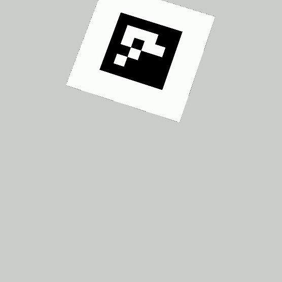
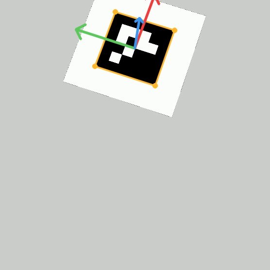
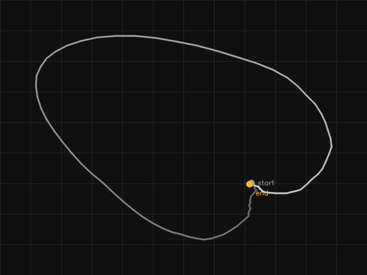
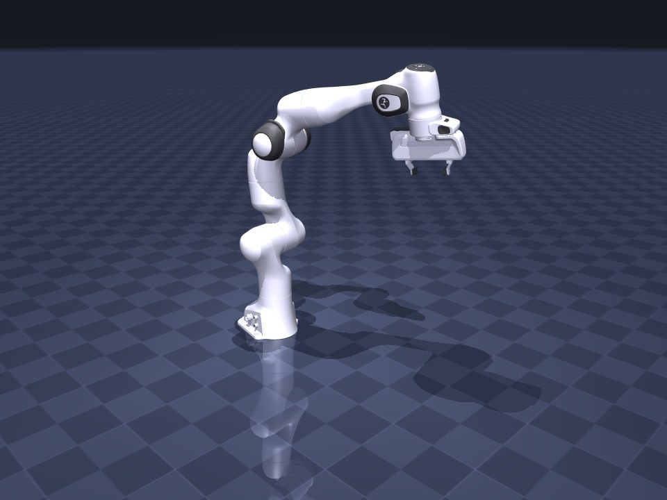

01
Read the video
Frames go in one at a time. No depth channel is assumed and no calibration target is required beyond the camera intrinsics.

Demonstration capture without a teleop rig
vid2traj takes ordinary RGB video — a phone, a webcam, no depth sensor — and produces a joint-space trajectory a specific robot can actually execute: inside its joint limits, inside its velocity and acceleration limits, and free of self-collision on every single frame. It exports as a LeRobotDataset.
Franka Panda · 90 frames @ 30 fps · the two clips are the same motion, not a re-enactment Open the frame-by-frame review →
What it is
Imitation learning needs hours of demonstration data. Today that usually means a teleoperation rig: an operator, a leader arm, a follower arm, and a lab. It is slow, it does not parallelize, and it needs the robot before you have the data.
Video of people doing tasks with their hands is, by comparison, everywhere and free. The gap is that a video is not a trajectory. It has no joint angles, no metric scale, no notion of what a particular arm can physically reach, and no guarantee that anything in it is safe to execute.
vid2traj closes that gap end to end: it estimates the wrist pose per frame, lifts it into a world frame, smooths it, solves inverse kinematics against a real robot model, and then refuses to emit any pose the robot could not safely hold. What comes out the far side loads directly into the LeRobot training stack.
It is a research tool and it is honest about its limits. Absolute metric scale from a single un-instrumented camera is an open problem; the marker frontend sidesteps it, the hand frontend approximates it. Nothing here models contact forces.
How it works
These are ordered steps, each one consuming the last one's output.
Frames go in one at a time. No depth channel is assumed and no calibration target is required beyond the camera intrinsics.

Two interchangeable frontends behind one interface. MediaPipe Hands for bare hands — maintained, CPU-real-time, tiny. An ArUco marker when you want a metric, deterministic, learning-free reading. A frame with no confident detection returns nothing rather than a guess.

The camera extrinsic puts every pose in one fixed frame. Short dropouts are interpolated; long ones are left flagged rather than invented, because a confident line through a gap you never observed is a lie.

A fixed wrist-to-end-effector offset from the robot's config turns the human pose into a target pose, then damped least-squares IK on MuJoCo's analytic Jacobian solves for joint angles. Redundant arms get a null-space pull toward the home pose so the elbow stays put instead of wandering between solutions.

Every candidate is clamped into the joint limits, rate-limited so no velocity or acceleration limit breaks, and checked for self-collision in MuJoCo. If a pose still fails, the previous valid one is held and the frame is recorded as held.
Parquet plus MP4 in the v3.0 layout, with the metadata the real loader expects. Byte-identical across runs on the same input.
meta/info.json
meta/tasks.parquet
meta/episodes/chunk-000/…
data/chunk-000/file-000.parquet
videos/observation.images.side/…Proof
The core regression generates a known joint trajectory, renders it to video, runs the whole pipeline on that render, and compares the recovered end-effector pose against the trajectory it started from. Nothing is mocked in between.
| What is checked | How | Result |
|---|---|---|
| Round-trip accuracy | synthetic ground truth through the full pipeline | — |
| Joint limits and self-collision | every emitted frame re-checked in MuJoCo | every frame passes |
| Velocity and acceleration | finite differences against the robot's datasheet limits | no frame exceeds |
| LeRobot compatibility | loaded and iterated with the real lerobot package | loads, iterates fully |
| Determinism | two runs, SHA-256 of the Parquet and MP4 | byte-identical |
| Degradation | occlusion, subject leaving frame, two people | no crash, no unsafe frame |
Two different failures, marked two different ways. A pose the safety pass rejects — self-collision that survives rate limiting — falls back to the last one it trusts: amber in the review page, counted as held in the safety report. A frame perception never saw is marked unobserved instead; short gaps are interpolated, long ones hold the last solved pose rather than chase noise. Either way the failure mode is a robot that pauses, not a robot that lunges. That is the only behaviour a demonstration dataset is allowed to have.
Robots
Nothing in the retargeting, safety, or export layers branches on which robot it is driving. The model path, joint set, limits, home pose, wrist offset, gripper mapping and IK gains all live in YAML.
| Robot | Arm joints | Task-space | Added by |
|---|---|---|---|
| Franka Panda | 7 + parallel gripper | full 6-DOF, 1 redundant | — |
| SO-101 | 5 + jaw | position, orientation relaxed | one YAML file |
SO-101 is deliberately the harder case: five joints cannot reach an arbitrary six-DOF pose, so its config declares orientation a soft preference and convergence is judged on position. That is a flag in the file, not a fork in the code.
Get started
# install pip install -e . # make a synthetic clip with known ground truth vid2traj synth --out demo/ # convert a video into a LeRobot dataset vid2traj convert demo/clip.mp4 --embodiment franka_panda \ --camera demo/camera.json --out demo/dataset # build the side-by-side review page vid2traj viz demo/dataset --video demo/clip.mp4 --out review.html